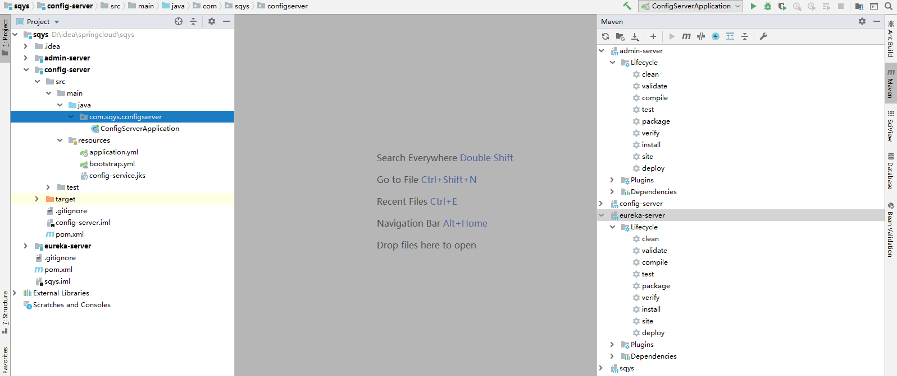
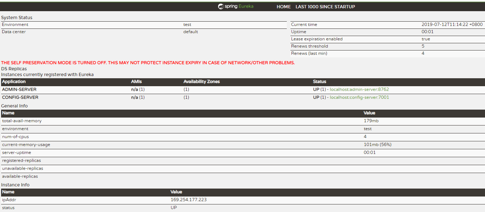
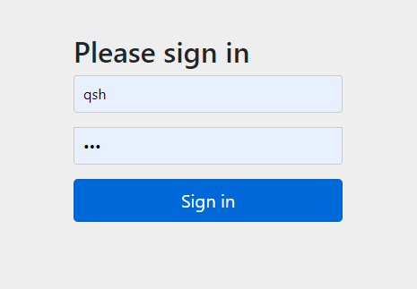
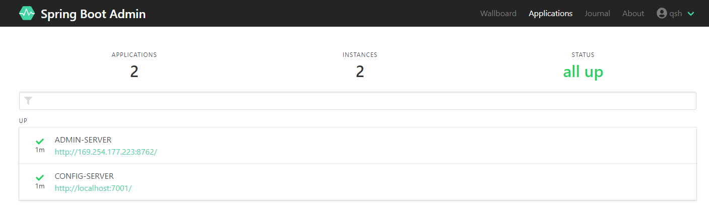
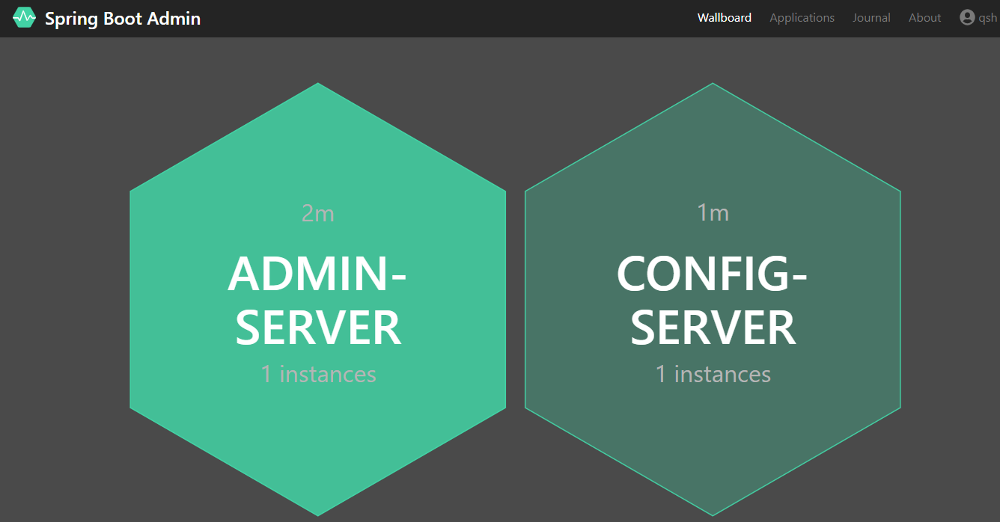
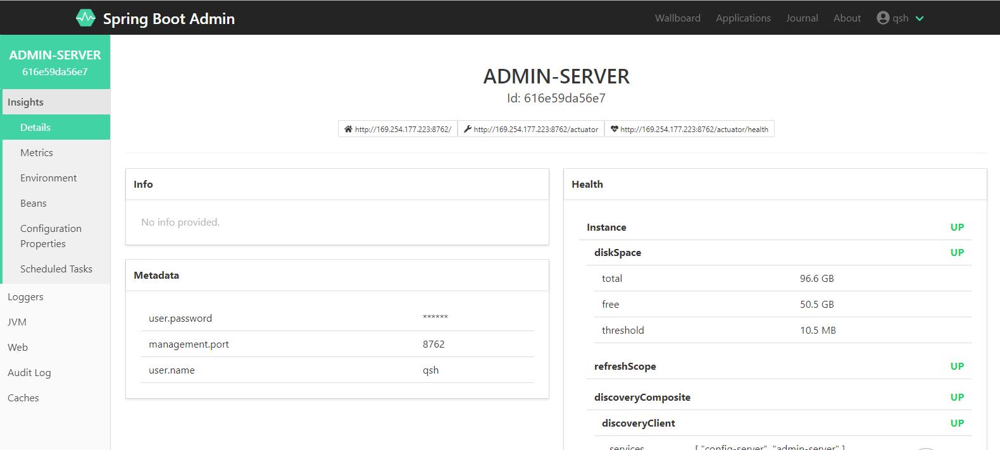
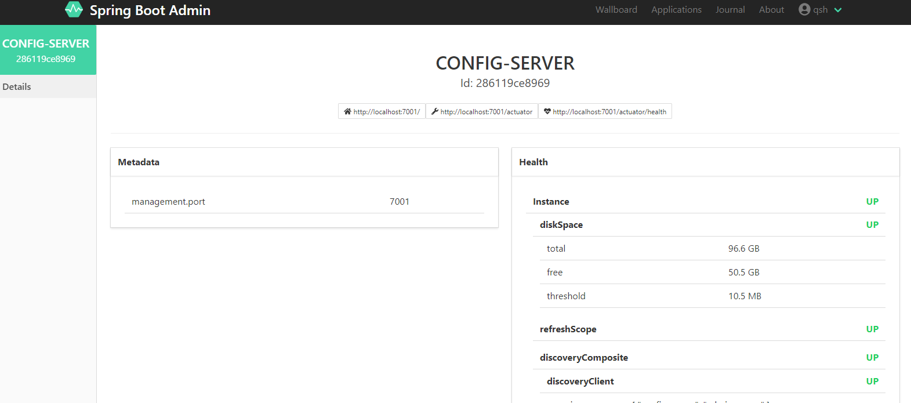

版本信息
Spring Boot 2.1.6.RELEASE
Spring Cloud Greenwich.RELEASE
参考 Spring Cloud Config
配置管理工具包，让你可以把配置放到远程服务器，集中化管理集群配置，目前支持本地存储、Git以及Subversion，本文采用Git方式。
创建config-server配置中心
在原有工程下，添加一个modual，目录结构如下

修改后pom.xml如下
1
2
3
4
5
6
7
8
9
10
11
12
13
14
15
16
17
18
19
20
21
22
23
24
25
26
27
28
29
30
31
32
33
34
35
36
37
38
39
40
41
42
43
44
45
46
47
48
49
50
51
52
53
54
55
56
57
58
59
60
61
62
63
64
65
66
67
68
69
70
71
72
73
74
75
76
77
78
79
80
81
82
83
84
85
86
87
88
89
90
91
92
93
94
95
96
97
98
99
100
101
102
103
| <?xml version="1.0" encoding="UTF-8"?>
<project xmlns="http://maven.apache.org/POM/4.0.0" xmlns:xsi="http://www.w3.org/2001/XMLSchema-instance"
xsi:schemaLocation="http://maven.apache.org/POM/4.0.0 http://maven.apache.org/xsd/maven-4.0.0.xsd">
<modelVersion>4.0.0</modelVersion>
<parent>
<groupId>org.springframework.boot</groupId>
<artifactId>spring-boot-starter-parent</artifactId>
<version>2.1.6.RELEASE</version>
<relativePath/>
</parent>
<groupId>com.sqys</groupId>
<artifactId>config-server</artifactId>
<version>0.0.1-SNAPSHOT</version>
<name>config-server</name>
<description>Demo project for Spring Boot</description>
<properties>
<project.build.sourceEncoding>UTF-8</project.build.sourceEncoding>
<project.reporting.outputEncoding>UTF-8</project.reporting.outputEncoding>
<java.version>1.8</java.version>
<spring-cloud.version>Greenwich.RELEASE</spring-cloud.version>
</properties>
<dependencies>
<dependency>
<groupId>de.codecentric</groupId>
<artifactId>spring-boot-admin-starter-client</artifactId>
<version>2.1.6</version>
</dependency>
<dependency>
<groupId>org.jolokia</groupId>
<artifactId>jolokia-core</artifactId>
</dependency>
<dependency>
<groupId>org.springframework.boot</groupId>
<artifactId>spring-boot-starter-web</artifactId>
</dependency>
<dependency>
<groupId>org.springframework.boot</groupId>
<artifactId>spring-boot-starter-security</artifactId>
</dependency>
<dependency>
<groupId>org.springframework.cloud</groupId>
<artifactId>spring-cloud-starter-netflix-eureka-client</artifactId>
</dependency>
<dependency>
<groupId>org.springframework.cloud</groupId>
<artifactId>spring-cloud-config-server</artifactId>
</dependency>
<dependency>
<groupId>org.springframework.cloud</groupId>
<artifactId>spring-cloud-commons</artifactId>
</dependency>
<dependency>
<groupId>org.springframework.boot</groupId>
<artifactId>spring-boot-starter-actuator</artifactId>
</dependency>
<dependency>
<groupId>org.springframework.boot</groupId>
<artifactId>spring-boot-configuration-processor</artifactId>
<optional>true</optional>
</dependency>
</dependencies>
<dependencyManagement>
<dependencies>
<dependency>
<groupId>org.springframework.cloud</groupId>
<artifactId>spring-cloud-dependencies</artifactId>
<version>${spring-cloud.version}</version>
<type>pom</type>
<scope>import</scope>
</dependency>
</dependencies>
</dependencyManagement>
<build>
<plugins>
<plugin>
<groupId>org.springframework.boot</groupId>
<artifactId>spring-boot-maven-plugin</artifactId>
</plugin>
</plugins>
<resources>
<resource>
<directory>src/main/resources</directory>
<filtering>true</filtering>
<excludes>
<exclude>**/*.jks</exclude>
</excludes>
</resource>
<resource>
<directory>src/main/resources</directory>
<filtering>false</filtering>
<includes>
<include>**/*.jks</include>
</includes>
</resource>
</resources>
</build>
</project>
|
修改ConfigServerApplication如下
1
2
3
4
5
6
7
8
9
10
11
12
13
| import org.springframework.boot.SpringApplication;
import org.springframework.boot.autoconfigure.SpringBootApplication;
import org.springframework.cloud.client.discovery.EnableDiscoveryClient;
@EnableDiscoveryClient
@SpringBootApplication
public class ConfigServerApplication {
public static void main(String[] args) {
SpringApplication.run(ConfigServerApplication.class, args);
}
}
|
修改application.properties为application.yml,添加如下内容
1
2
3
4
5
6
7
8
9
10
11
12
13
14
15
16
17
18
19
20
21
22
23
24
25
26
27
28
29
30
31
32
33
34
35
36
37
38
39
40
| server:
port: 7001
spring:
application:
name: config-server
boot:
admin:
client:
url: http://localhost:8762
prefer-ip: true
cloud:
config:
retry:
initial-interval: 3000
multiplier: 1.5
max-interval: 20000
max-attempts: 6
server:
git:
uri: https://github.com/*********.git
search-paths: '{application}'
username: ****
password: ****
security:
user:
name: qsh
password: 123
management:
endpoints:
web:
exposure:
include: "*"
endpoint:
health:
show-details: ALWAYS
|
添加新的配置文件bootstrap.yml
1
2
3
4
5
6
7
8
9
10
11
12
13
14
15
16
|
eureka:
client:
serviceUrl:
defaultZone: http://localhost:8761/eureka/
instance:
prefer-ip-address: true
leaseRenewalIntervalInSeconds: 10
health-check-url-path: /actuator/health
encrypt:
key-store:
location: classpath:/config-service.jks
alias: qisuheng
password: qisuheng
secret: qisuheng
|
先后启动eureka-server、admin-server、config-server


输入application.yml中安全认证配置的用户名密码，登录显示界面如下

查看wallboard

查看admin-server具体的信息

查看config-server具体的信息
